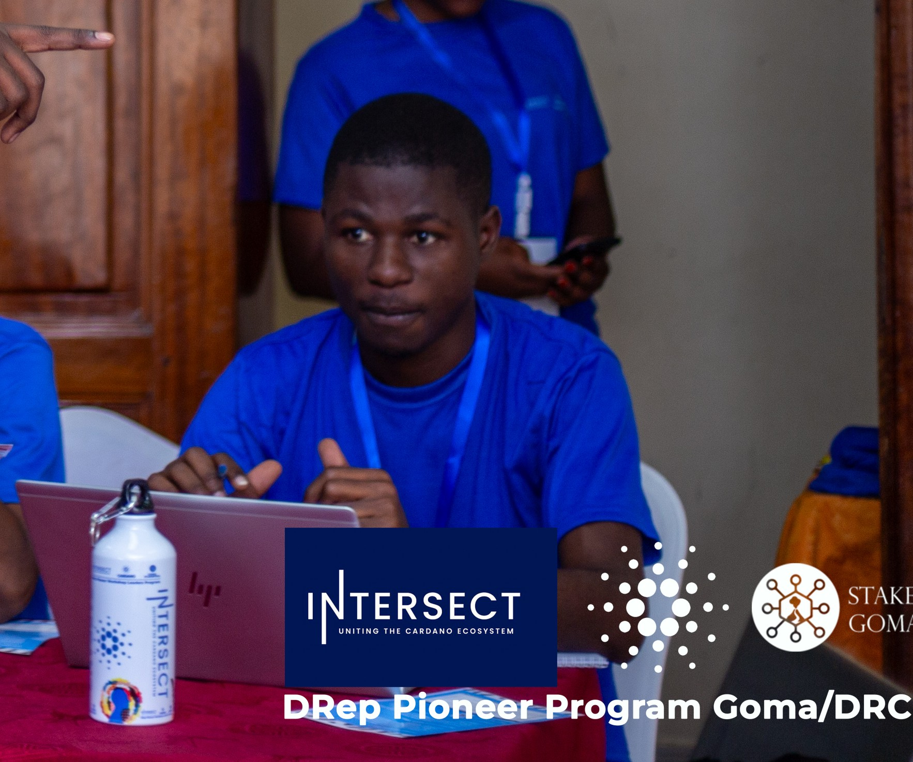

Informaticien Technicien à l'UPG, Dévéloppeur Junior et Spécialiste Analyste de données et Promoteur de Masu Data Business
Me contacter Voir mon CV dans DriveJacques MASURUKU est un Technicien supérieur en Développement Rural et Informaticien Technicien. Il est un professionnel polyvalent avec une expertise pointue en gestion et analyse de données. Fort de sa double casquette, il est capable de concevoir et de mettre en œuvre des solutions techniques pour la collecte, le traitement et la visualisation de données, en particulier dans le secteur du développement.